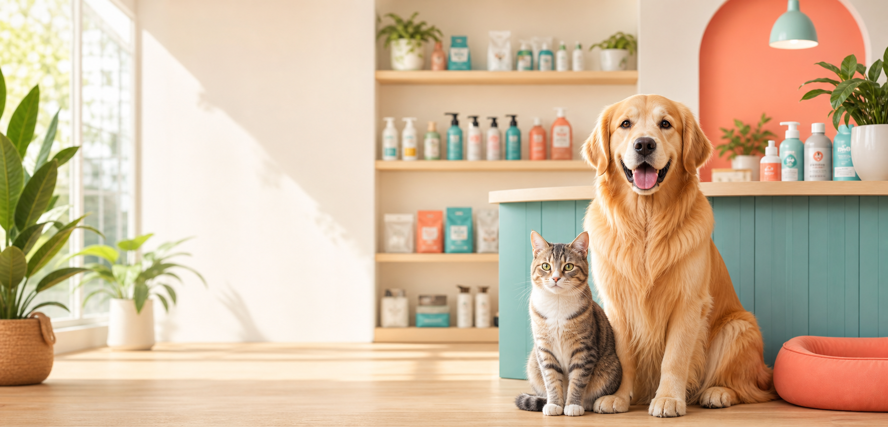

Comunicação amigável para reforçar carinho, segurança e responsabilidade.
Pet shop com cuidado de verdade
Carinho, conforto e confiança para o seu pet.
O Entre Patas é um pet shop pensado para apresentar serviços de cuidado animal em uma experiência digital leve, acolhedora e fácil de navegar.

Apresentação
Um espaço acolhedor para pets e tutores.
A página inicial apresenta a identidade do pet shop, cria uma primeira impressão profissional e guia o usuário para as principais áreas do sistema.
Layout limpo, seções bem divididas e navegação direta no topo da página.
Cores, fontes e botões seguem o mesmo estilo em toda a página inicial.
Destaques
Serviços que aparecem na página inicial
Esta seção funciona como chamada visual para as funcionalidades que o grupo pode desenvolver em outras páginas do projeto.
Banho completo
Apresentação do serviço de higiene e cuidado com a pelagem do pet.
Tosa higiênica
Destaque para o serviço de tosa, conforto e bem-estar animal.
Cadastro de pets
Chamada para a funcionalidade de cadastro que pode ser feita por outro integrante.